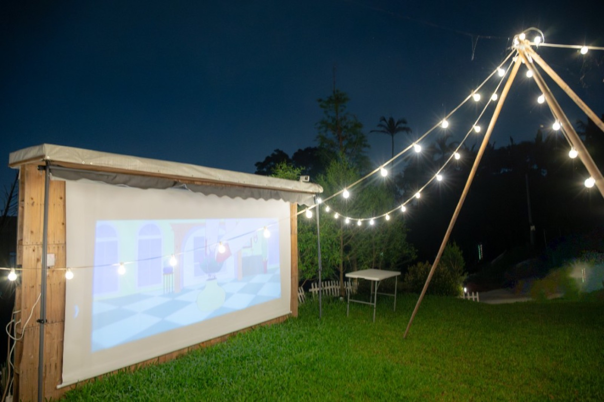
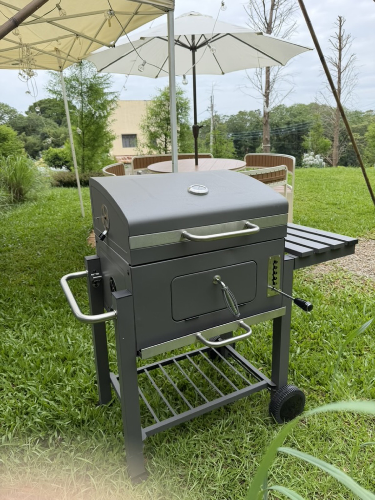
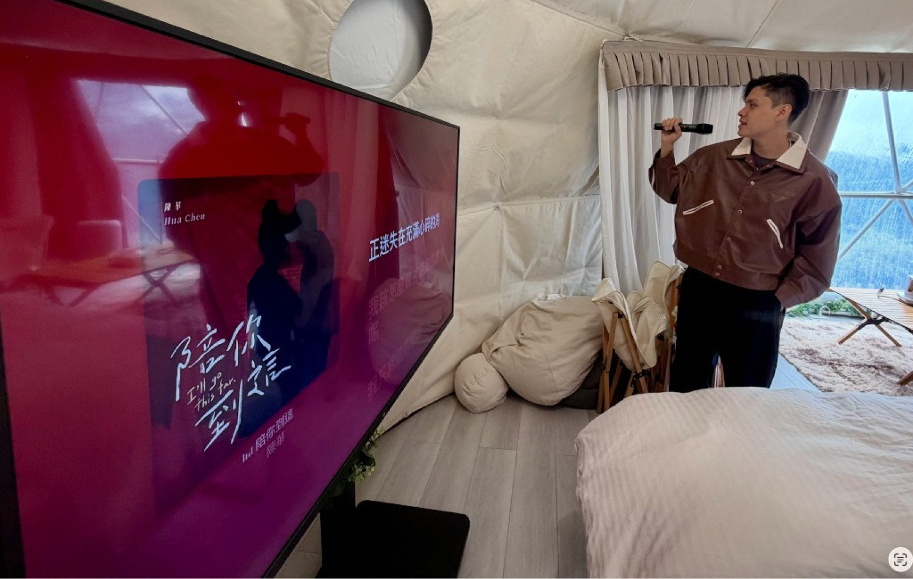
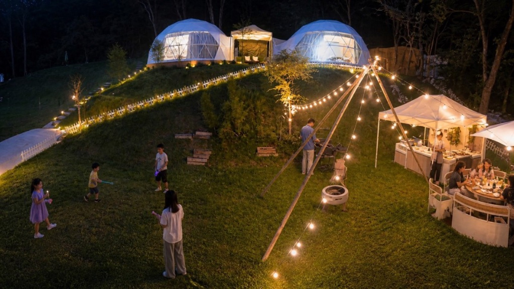
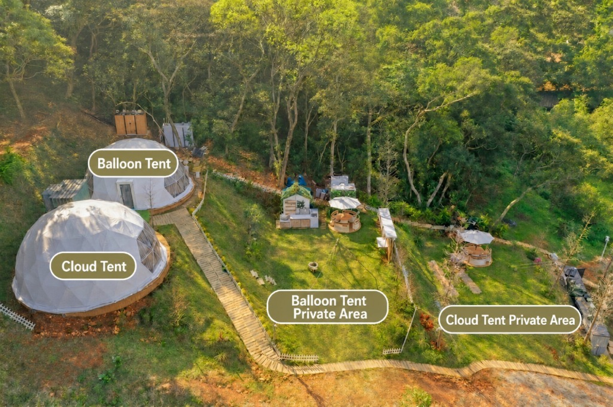
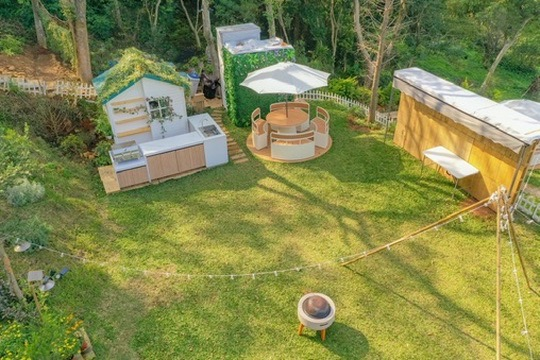
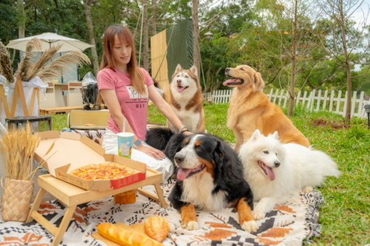

Outdoor Movie Night
String lights, lawn, forest, and a big screen—best after dark. Ideal for birthdays, proposals, and friend gatherings.
Enjoy a private forest venue from afternoon until midnight. Joyforest is suitable for birthdays, baby milestone parties, proposals, friend gatherings, pet gatherings, family meals, BBQ, outdoor movies, karaoke, and photo shoots near Taipei and Taoyuan.
15:00–24:00｜Up to 20 Guests｜Whole-Venue Package｜Two Lawns｜Karaoke Until 22:00

String lights, lawn, forest, and a big screen—best after dark. Ideal for birthdays, proposals, and friend gatherings.

Grill, hot pot, or a full dinner—everyone gathers on the lawn to eat and chat.

If it rains or gets cold at night, move indoors to sing with AC—your party keeps going.

Kids, pets, and friends can move freely—more memorable than a typical indoor private room.
Indoor activity space
Balloon Tent indoor space plus its dedicated lawn, one 7 m diameter dome tent, outdoor dining tables, outdoor kitchen, gathering and photo areas.
The dome interior fits a real group activity—not just sleeping. Chat, rest in AC, sing, watch movies, dine, and host small indoor programs.
Two lawns
Use the Balloon Tent indoor activity space and both lawns, with outdoor kitchens and movie equipment. The other indoor space is reserved for storing event items, not a second activity room or overnight accommodation.
Best for larger parties, family reunions, brand events, and long gatherings that need separate zones.

One package for up to 20 guests, from 15:00 to 24:00, including setup, your event, cleanup and departure. This is an event rental without overnight accommodation.
NT$10,800 per event
NT$13,800 per event
Capacity includes adults, children and event staff. Parking accommodates 6 standard passenger cars. There are no hourly single-zone or dual-zone packages.
Karaoke is available until 22:00. Quiet hours begin at 22:00: no karaoke, and please keep conversations and other activities quiet.
No birthday discount, gifts or decoration service is included. Please bring your own cake, food and simple decorations.


Karaoke is available until 22:00. After 22:00, no karaoke is allowed; keep other activities quiet and avoid large speaker systems.
Please sort and consolidate trash when your event ends.
Outdoor activities may be affected by rain—contact us in advance to confirm the day’s plan.
Please park only in designated areas—do not drive onto the lawn.
Please help care for the lawn. Catering trucks and large setups require advance notice.
Tell us your date, group size and event type—we’ll help confirm the whole-venue package and availability.